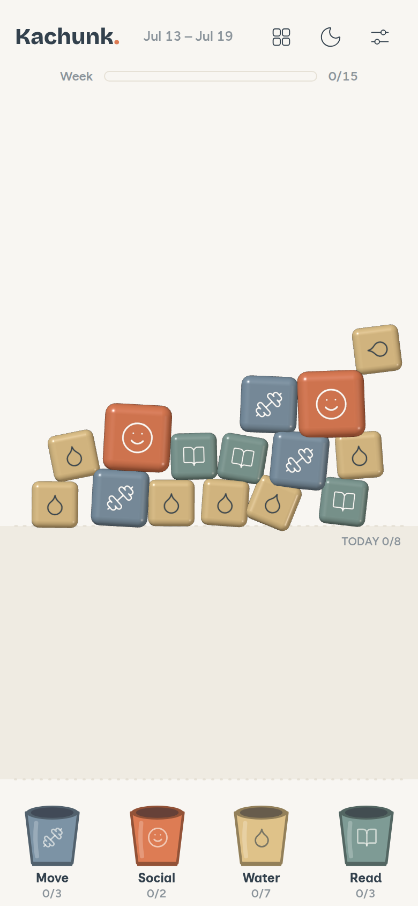
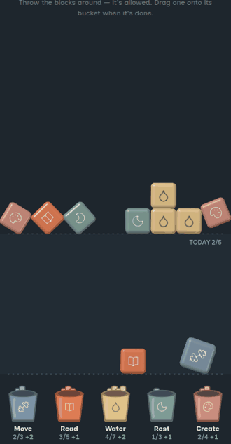
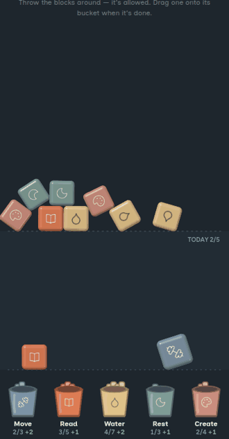
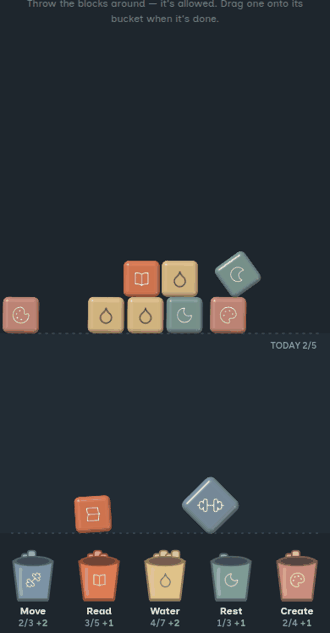

Your week is a pile of real 3D blocks. Do the thing, drag its block into the bucket — kachunk. A habit builder for ADHD brains, visual thinkers, and everyone the calendar keeps losing.
Coming to iOS & Android · $5.99 once, never a subscription

A live sandbox with a sample week — drag a block into its bucket, flick one across the board, drop the Water block below the line and watch it shatter into chips.
It's a sandbox, not the app — nothing is saved, and it resets when you leave.
Calendars break the moment life moves. Kachunk gives every weekly intention a bucket and a handful of physical blocks — the week can reshuffle all it wants, the blocks still count.
Move ×3, Read ×5, Water ×7 — each commitment gets its own bucket and its own toy-brick blocks.
They're real physics. Toss them, stack them, shake the phone and the pile rattles. It's a fidget toy that happens to build habits.
Drag the block into its bucket. Confetti, a satisfying thunk, done. Small-rep habits shatter into chips you bank one at a time.
At week's end Kachunk asks "did you do it?" — you tap what actually happened. Nothing ever resets into the void.
Every mechanic is the opposite of the shame machine you've deleted three times.

Drag the block home and it lands with a thunk, a chime, and confetti. Real 3D bricks, real physics — the tracking is the reward.

Toss the blocks, spin them, shake the phone and the pile rattles. It's a fidget object that happens to be your week.

Eight glasses of water isn't one moment. Drop the block into today and it shatters into chips you bank one small win at a time.
No subscription, no premium tier, no "unlock more buckets." Habit apps charging rent is the ADHD tax — Kachunk doesn't collect it.
Try the sandbox$5.99, once, when it launches on the app stores — that buys the whole thing forever: widgets, sync, notifications. Never a subscription, never in-app purchases. The sandbox on this page is free to poke at any time; it just doesn't save.
Nowhere. Kachunk is local-first: your blocks live in your browser's storage on your device. There's no account, no server, and no analytics inside the app. You can export a backup file any time and import it on a new phone.
It was designed with ADHD and visual thinkers in mind — weekly buckets instead of daily streaks, one notification, zero guilt mechanics. But "a habit tracker that doesn't punish you" turns out to be something most brains prefer. (Kachunk is a wellness tool, not a medical treatment.)
Two ways. The unit is the week, not the day — so one bad Tuesday can't break anything. And your habits are physical: real 3D blocks with real physics that you toss, stack, shatter into chips, and drop into buckets. We couldn't find another app that works this way.
There is no streak counter anywhere in Kachunk, and nothing ever auto-resets. At the end of the week the sweep asks "did you do it?" — you tap what actually happened, it goes in your receipts, and you restack. Progress you can hold, not a chain you can break.
They're in progress — the sandbox above is the real product, not a mockup. Follow the build on GitHub, and the store listings will land as soon as the wrapper clears review.